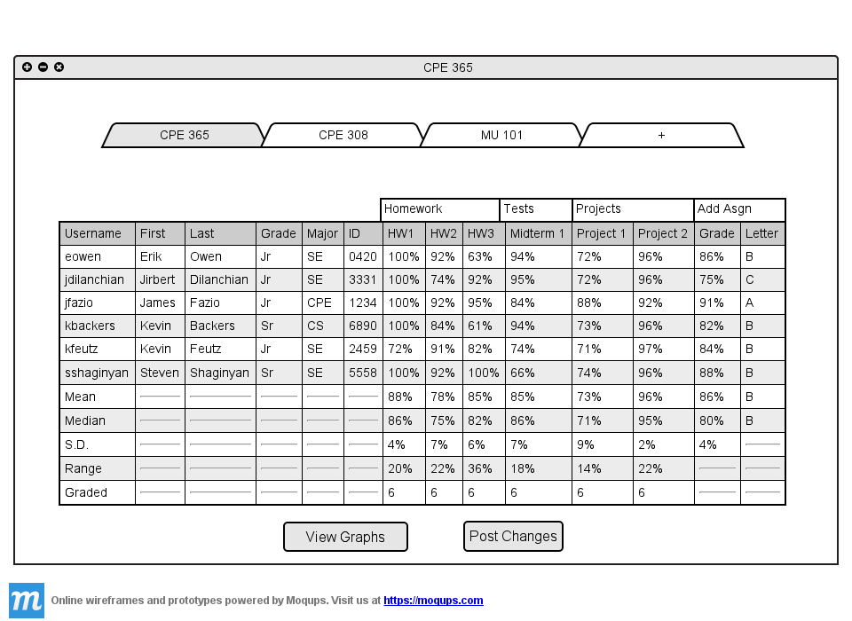
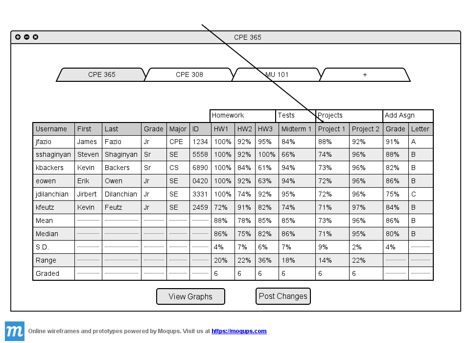
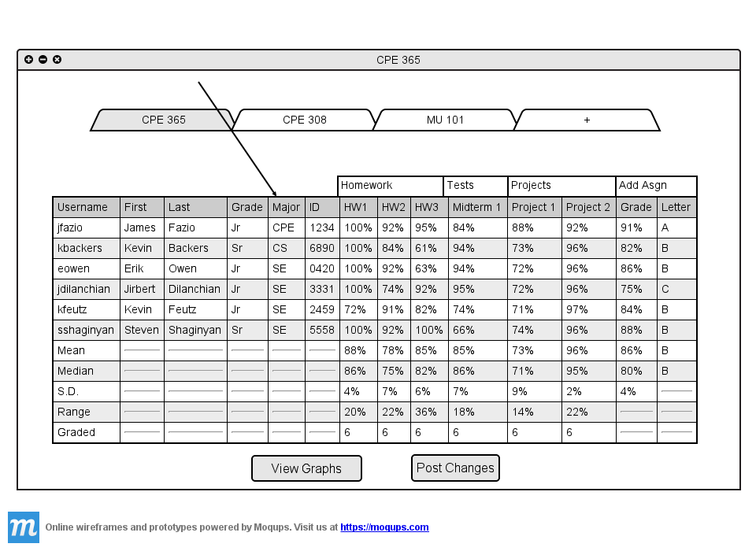

By default the spreadsheet is sorted alphabetically by username. In this section all of the
student information columns are displayed. The arrows in the column header are turned off to
show the information more easily. To turn off column header arrows visit
Section 2.5.3

Figure 2.5.2 A: Default sorting of the table.
The teacher clicks on the 'Project 1' cell.

Figure 2.5.2 B: The table is now sorted by Project 1 grades.
The table now displays the students with the highest grades on Project 1 in descending order. If two students
have the exact same grade on an assignment, they are sorted secondly by username.
The teacher now wants to sort the table by major. He wants to see how different majors do in his class. The teacher
clicks on the 'Major' cell.

Figure 2.5.2 C: The table is now sorted by Major.